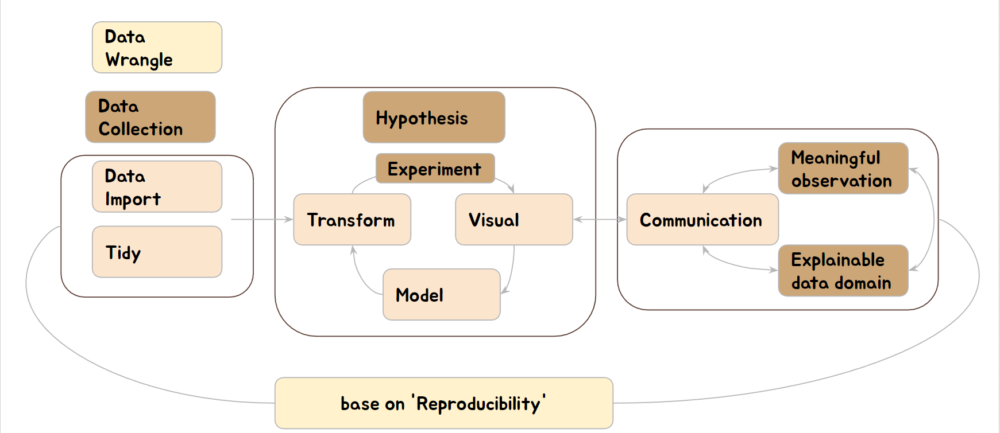

DsPubs with R tutor book
2022-11-21
Chapter 1 Introduction
Public health is the science for improving health of human and their society. Public health closely related from medical science to social science. Hence, multidisciplinary approach is one of the most important skill for public health specialists.
Data science is an emerging, dynamic field, and still keeping evolving their specialties. Generally, data science include data analysis and visualization with automation (reproducibility and replicability). The results of data science should beyond reporting and be used by other people.Data science for Public Health (DsPub) track needed bio-statistical theory and machine learning, reproducible (automatic), and data management, and communication by visualization and reproducible and share-able transparent code. Data Science in Public health need domain knowledge of health, disease and death, as well as environment which linked to human life. Such heterogeneity data in public health need new concept of application from data science.
In this course we train the data analysis and visualization, data management, automation and reproducible and share-able transparent code. Hence, basic statistical theory and research methods of public health are prerequisites. The first step is related to data analysis with visualization, and automation. The second step is related to data management, reproducible results and share-able transparent code. Actualy we will deploy our one web app of data visualization and machine learning algorithms.

We will use R, Rstudio, markdown, Shiny server, PostgreSQL and github in this tutorial. The R is free open source statistical language, and widely used for data science area. Most important referece are the books of by Rafael A. Irizarry, and by Hadley Wickham, as below.
| title | authos | url |
|---|---|---|
| Introduction to Data Science with R | Rafael A. Irizarry | https://rafalab.github.io/dsbook/ |
| R for Data Science | Garrett Grolemund, Hadley Wickham | https://r4ds.had.co.nz/index.html |
- I hope you will get valuable experience with me.